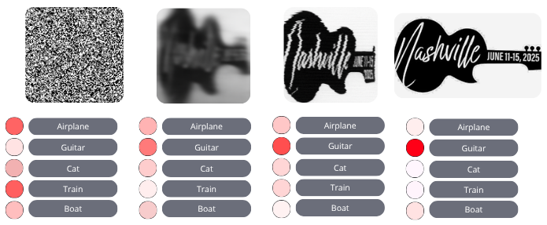

Abstract
Continual learning (CL) aims to learn a sequence of tasks without forgetting prior knowledge, but gradient updates for a new task often overwrite previously learned weights, causing catastrophic forgetting. PAH (Prototype-Augmented Hypernetworks) solves this by using a hypernetwork that generates task-specific classifier heads conditioned on learnable task prototypes. It combines cross-entropy with dual distillation losses for stable learning and achieves state-of-the-art results on benchmarks like Split-CIFAR100 and TinyImageNet, without relying on rehearsal buffers.
How It Works
PAH uses a single hypernetwork shared across all tasks. This hypernetwork takes as input a learnable prototype that represents a given task and outputs the weights for a task-specific classifier. During training, both the prototype and the shared feature extractor are updated. During inference, only the current task prototype is needed to generate the classifier head.
Why It Works
Prototypes serve as compact, semantically meaningful representations of tasks, initialized using actual training data and optimized to remain aligned with the evolving feature space. This alignment ensures that the hypernetwork can always produce accurate classifier heads, even without explicit task identity or replay memory.
Model Architecture
Learnable Task Prototypes
Each task has a prototype grid (e.g., 10×10) formed by stacking class-level feature maps. These grids are flattened and fed into the hypernetwork to generate the classification head. They are optimized using a KL-divergence loss to preserve semantic alignment over time.
Benchmark Comparison
Installation
git clone https://github.com/pah2025/PAH
cd PAH
python -m venv env
source env/bin/activate # Or env\Scripts\activate on Windows
pip install -r requirements.txt
Usage
Edit config/hyper2d.py to customize dataset, backbone, prototype grid size, initialization strategy, network width, and training hyperparameters like learning rate and dropout. Then run:
python train_hyper2d.py config/hyper2d.pyData
Split-MNIST and Split-CIFAR100 are downloaded automatically to the data/ directory. TinyImageNet must be manually downloaded from
here.
Results
Training results are saved in the results/ directory and can be monitored using Weights & Biases.